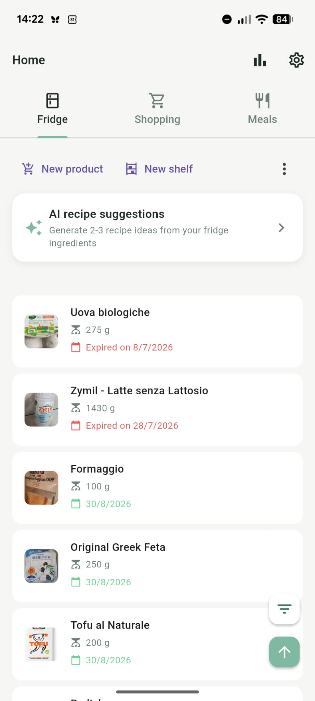
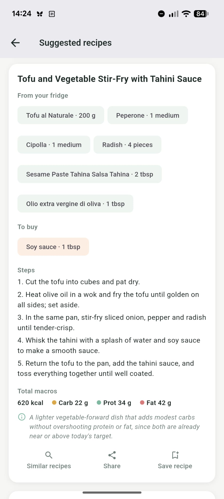
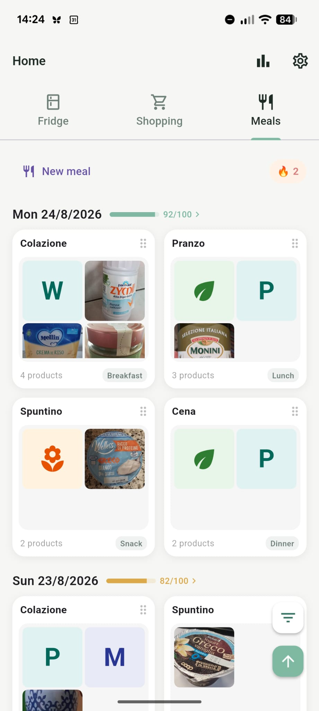
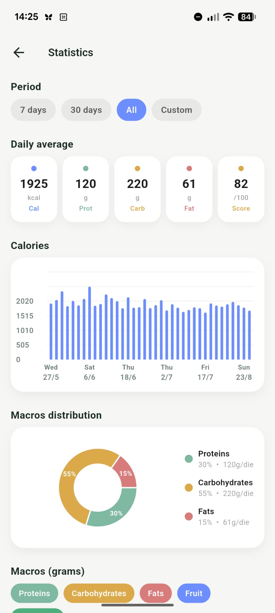
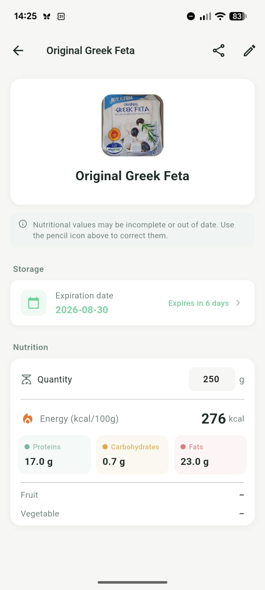
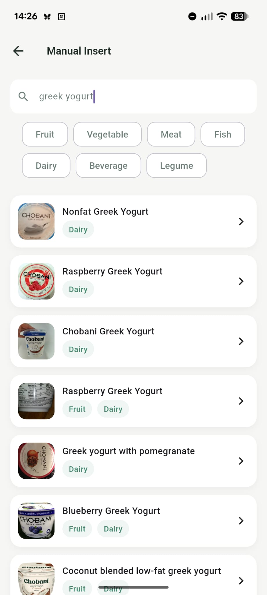
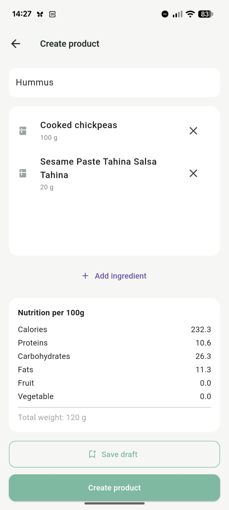
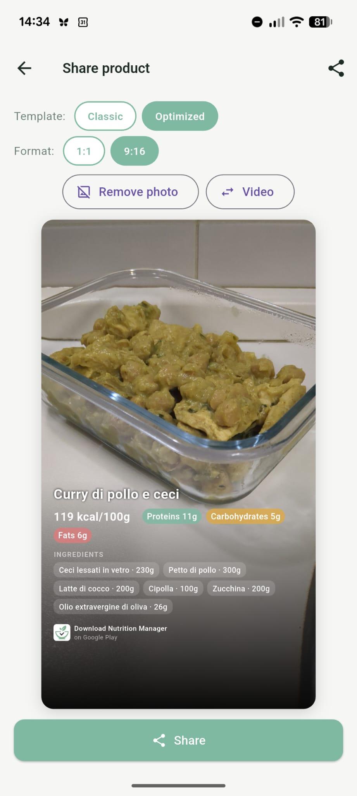

Manage your fridge, plan your shopping, log meals, get AI-powered recipe ideas from what you have, and share it all — in one beautifully simple app.
Download FreeOrganize your fridge into custom shelves. See what you have, what's expiring, and reduce food waste.
Build shopping lists with barcode scanning. Add products instantly from Open Food Facts' database.
Log breakfast, lunch, dinner and snacks. Track portions and see nutritional breakdowns per meal.
Visualize your macros, calories and micronutrients with clear charts and color-coded indicators.
Get recipe ideas generated from what's actually in your fridge — no food wasted, no extra shopping. First 10 requests free.
Turn any recipe or meal into a beautiful card with ingredients and macros, ready to share on social media.








Download Nutrition Manager for free on Android and take control of what you eat.
Download on Google Play